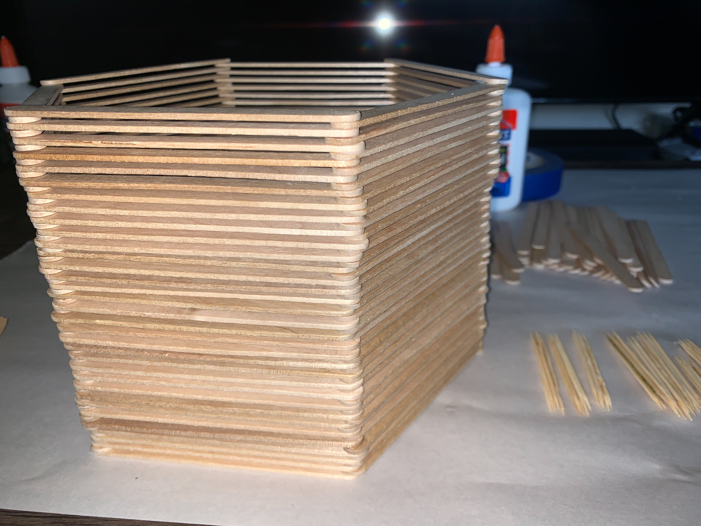

The Soul Tree
2021, Sculpture
Process

Art 13: 3D Concepts | Modules
For this project, we had to create three-dimensional modules from any material we chose. I chose to use both toothpicks and popsicle sticks. After creating almost a hundred identical modules over and over again, I connected them together in a spiral pattern from the biggest at the bottom to the smallest at the top. The toothpicks were made glued together to look like branches as if it was a tree. The connection between the material and context of the sculpture is that they are both about nature, the wood element. I want to showcase the thought of how a person’s spirit manifests into growth, like how a child grows condensing information and making something out of themselves.